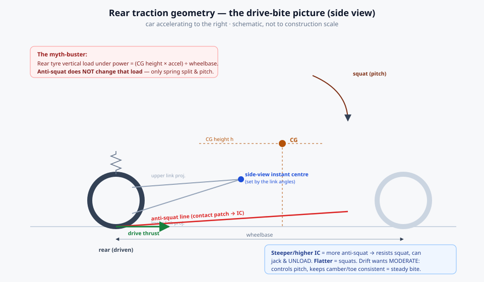
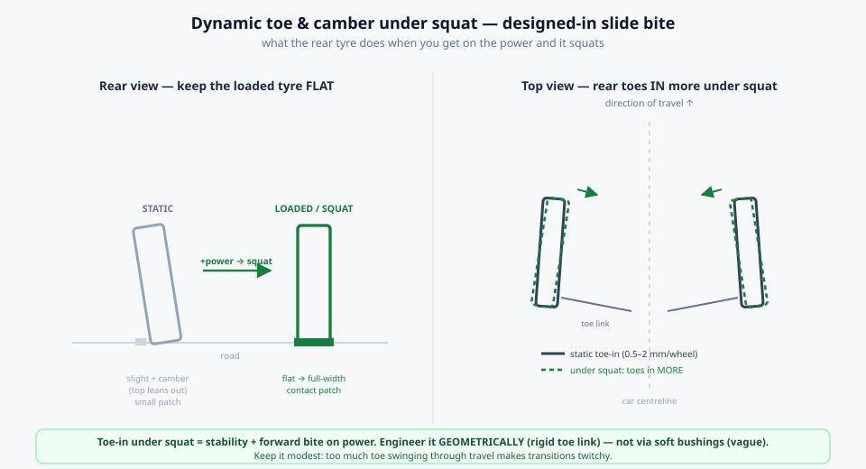
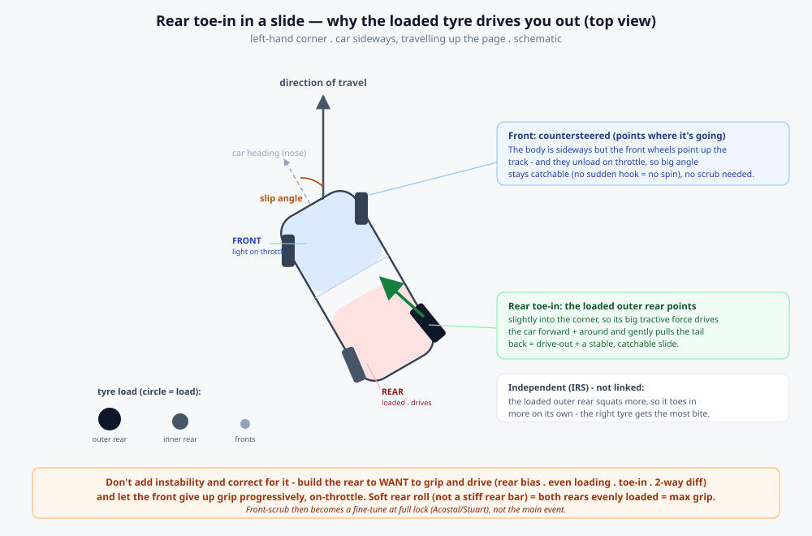

Designed to drive sideways
Most drift kits are corrections bolted onto geometry that was never meant to slide. This is the engineering case for the opposite approach — designing every hardpoint from scratch so the car wants to grip and drive at high slip angle, with the camber curves, dynamic toe, anti-squat and weight balance placed exactly where the physics wants them.
The real goal: grip and drive at high slip angle
Everyone gets this backwards. The engineering battle isn't making the car slide — it's making it bite and drive while already sideways, and stay predictable through transitions. That demands huge usable steering angle, a flat low-roll platform for repeatable contact, and deliberate weight transfer — including controlled squat to plant the rear — all underpinned by a low, central CG and a wide track. Frame it this way and it reorders every downstream decision around the contact patch.
The friction circle while drifting — the physics budget
A drifting rear tyre is at huge slip angle and being driven, sitting right at the edge of its
friction circle. Total force is capped at roughly μ × N (grip coefficient × vertical load),
and that budget is split between holding the slide (side force) and driving the car (forward force).

"Drive while sliding" comes from three things, in order: make the circle bigger (more N on the rear, more μ from compound/temp/contact patch); use both rear tyres via a locked or 2-way diff; and keep margin — a lighter car spends less of the circle moving its own mass, leaving more for drive and control. Everything below is how to maximise N, μ and consistency at that contact patch.
Front geometry — angle, self-steer and catchability built in
- Caster high, ~+5° to +12°. Drives self-centring through transitions so the driver steers with throttle and clutch and lets geometry return the wheel. More caster = faster return, at the cost of heavier steering and more camber gain.
- Camber aggressive, ~−4° to −7°, set so the lead wheel reaches roughly 0° effective camber at ~¾ lock — where grip is needed at angle.
- Ackermann reduced, zero or reversed (driver preference). Stock positive Ackermann scrubs the inner tyre at big angle; cutting it ~10–15% gains steering angle without scrub.
- 60°+ steering angle designed in from scratch — not retrofitted with an angle kit — with bump steer cleaned up through the whole angle range. A bad kit gives angle but terrible bump steer.
Rear geometry — a flat contact patch under load
Grip is maximised when the loaded tyre sits flat, so design the camber curve so the tyre is flat exactly when it's loaded, squatted and driving — on a clean sheet you design this directly instead of inheriting a donor's.
- Static rear camber slightly positive, ~+0.5° to +1°. Power-squat pulls the rear negative, so static positive cancels it and the loaded, driving tyre ends up flat = maximum patch = maximum drive.
- Static rear toe-in, ~0.5–2 mm/wheel (high-power cars push further) for forward grip and stability under throttle — but excess toe stresses the driveline, so test carefully.
- Anti-squat tuned for controlled power squat — a soft rear that deliberately squats plants weight over the rear for drive. Note: subframe/pickup height changes anti-squat and roll centre together.

Dynamic toe — the "rumour" that's real, and why it works
The rear can be set up to toe in as it squats under acceleration — adding stability and drive exactly when you're on the power, and backing off on lift for initiation. Two routes: the OEM elastokinematic way (Nissan multilink bushings deliberately deflect under drive — clever, but bushing-soft means vague and inconsistent) versus the race-correct geometric way (position the toe link so compression geometrically toes the wheel in; rigid rod ends, repeatable). We engineer the geometric version.

Toe-in works through two stacking mechanisms: the arrow/fletching effect (the rear resists swinging out, so you dare to load it) and the loaded outer rear aiming its tractive thrust inboard into the corner, driving the car around with a gentle yaw-restoring moment. Keep it per-wheel and geometric, not mechanically coupled across the axle — the tyre doing the driving gets the most aim-into-drive. Another tick for IRS over a solid axle. The caveat: too much over-stabilises — the car won't rotate and the rears scrub, heat and drag. Keep it modest.
Anti-squat — the most misunderstood lever, stated precisely
Myth: more anti-squat (or more squat) loads the rear tyre for more grip. Reality:
anti-geometry does not change the rear's vertical load — that total is fixed by
CG height × acceleration ÷ wheelbase, full stop. What anti-squat changes is how much load
goes through the springs versus the links, and the car's pitch attitude.
Its grip benefit is indirect but real: controlled anti-squat stops the rear squatting through travel, keeping camber, toe and roll-centre where you designed them (consistent patch = consistent drive) and stops wallow and bottoming. Two failure modes — too low wallows; too high "jacks up" and unloads the tyres. Target moderate. And because anti-squat, the dynamic-toe curve and the camber curve are all functions of the same rear-link geometry, designing every pickup from scratch is the only way to get all three right at once.
Load transfer, sway bars, and "load the rear"
Tyre grip is load-sensitive — the coefficient drops as load rises — so a pair sharing load evenly grips more than an unevenly-loaded pair. The rule for maximum rear drive follows: soft rear roll stiffness, minimal-to-no rear ARB → less lateral load transfer across the rear axle → both rears stay evenly loaded → more total rear grip.
Sway bars do not shift weight front/rear — they distribute lateral load transfer in roll. A stiff rear bar reduces rear grip (uneven loading) = more oversteer. That's the opposite of "load the rear." Soften or remove the front bar for more front grip and turn-in. Net classic balance: a planted soft rear and a grippier front.
Rear architecture, and catchable angle without scrubbing the front
On architecture: semi-trailing is compromised (poor camber, uncontrollable toe); strut is limited; factory multilink is good but built around elastokinematics and hard to re-tune via link length; double-wishbone + a dedicated toe link gives full control of every curve — the trophy-truck front applied to the drift rear; a well-located solid-axle 4-link is constant-camber, strong and cheap but high unsprung mass with coupled wheels. Recommendation: double-wishbone + toe-link IRS for the pro platform, solid axle as the grassroots option. Static rear bias lands around ~52–57% — the drift sweet spot; too much starves the front of grip for angle.
Make big angle catchable not by bleeding front grip with full-lock scrub, but by exploiting that on throttle a RWD car naturally loads the rear and unloads the front — throttle-adaptive, no scrub. Stack static rear bias, throttle-on front unload, and progressive front geometry so the front gives up grip predictably (a sudden front hook is what snaps a slide into a spin). The honest trade: rear bias unloads the front at every angle (costing some mid-angle bite) while scrub only cuts grip at full lock — so use both in proportion, and don't over-bias rearward or the car can't arrest yaw either.
Key takeaways
- Drift engineering is about making the car grip and drive at high slip angle — the whole rear end hangs off maximising and stabilising the rear contact patch.
- Rear vertical load is fixed by CG height × acceleration ÷ wheelbase — not by anti-squat, springs or sway bars. A stiff rear bar makes the car looser, not grippier.
- Slight static positive rear camber plus a designed camber curve keeps the loaded, squatted tyre flat; geometric dynamic toe-in adds drive-bite exactly on throttle.
- A from-scratch chassis is the biggest lever: anti-squat, dynamic toe and camber curve are all functions of the same rear-link geometry.
- Make angle catchable by building the rear to want to drive and letting the front give up grip progressively and on-throttle — scrub becomes a full-lock fine-tune.
Honesty notes. All numbers here are starting reference ranges — practitioner/aftermarket-sourced and driver-preference-dependent, to validate with testing, not absolutes. Rear bias appears as ~52–57% across sources. The IRS-vs-solid-axle and front-suspension-type calls are open design forks. Excess static or dynamic toe is a driveline-stress and twitchiness risk — keep it modest.